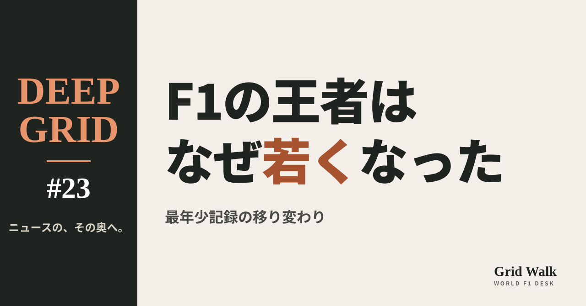
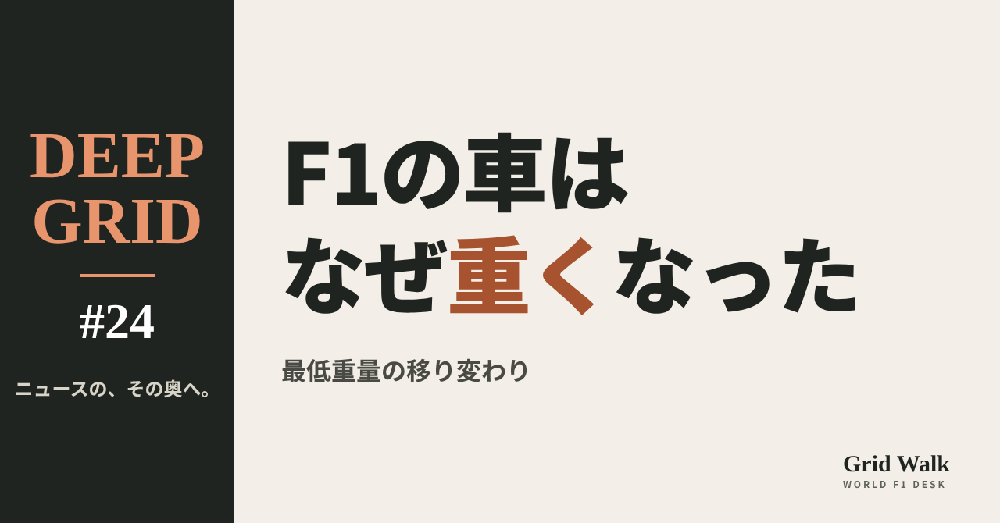
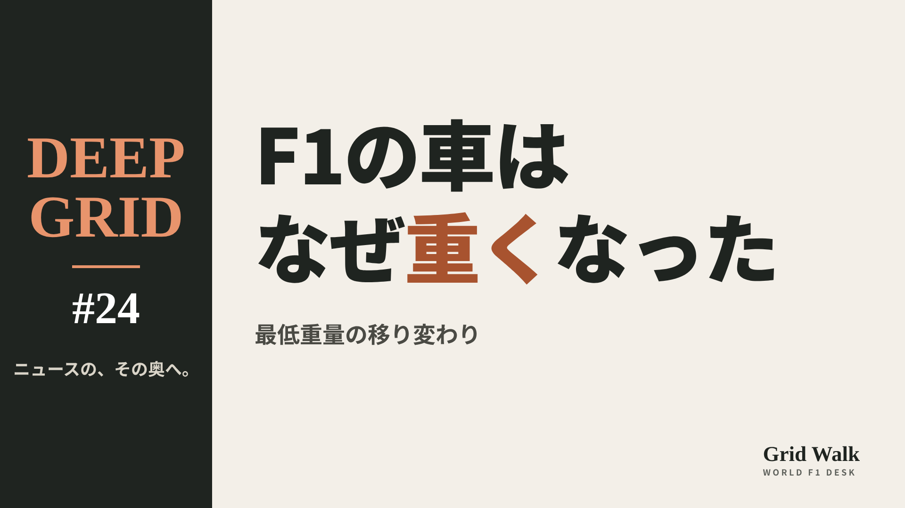

<meta charset="utf-8"><title>DEEP GRID #23〜#25 note貼り付け</title>
<style>
/* one column of numbered paste steps; text steps vs image steps differ by marker */
:root{--bg:#F5F4F0;--card:#FFFFFF;--ink:#1D2321;--mute:#5F665F;--line:#DCDAD2;--btn:#1F5FBF;--btnok:#2E8B4F;--img:#E9F3EC;--imgink:#22663B;--sans:'IBM Plex Sans JP','Hiragino Sans','Noto Sans JP',sans-serif}
@media (prefers-color-scheme:dark){:root:not([data-theme="light"]){--bg:#171A19;--card:#202423;--ink:#ECEDE8;--mute:#A3AAA2;--line:#343937;--btn:#4D8BE6;--btnok:#3FA866;--img:#1E2C23;--imgink:#8FD3A6;color-scheme:dark}}
:root[data-theme="dark"]{--bg:#171A19;--card:#202423;--ink:#ECEDE8;--mute:#A3AAA2;--line:#343937;--btn:#4D8BE6;--btnok:#3FA866;--img:#1E2C23;--imgink:#8FD3A6;color-scheme:dark}
body{background:var(--bg);color:var(--ink);font-family:var(--sans);font-size:15px;line-height:1.75;padding:20px 16px 60px}
main{max-width:680px;margin:0 auto;display:grid;gap:28px}
header h1{font-size:22px;margin:0 0 6px;text-wrap:balance}
header p{margin:0;color:var(--mute);font-size:14px}
nav{display:flex;gap:8px;flex-wrap:wrap;margin-top:12px}
nav a{border:1px solid var(--line);border-radius:999px;padding:4px 14px;color:var(--ink);text-decoration:none;font-size:14px;background:var(--card)}
.part h2{font-size:18px;line-height:1.5;margin:0 0 12px;text-wrap:balance;display:flex;gap:10px;align-items:baseline;flex-wrap:wrap}
.tag{font-size:13px;background:var(--ink);color:var(--bg);border-radius:6px;padding:1px 9px}
.steps{list-style:none;margin:0;padding:0;display:grid;gap:12px}
.st{background:var(--card);border:1px solid var(--line);border-radius:12px;padding:12px;min-width:0}
.hd{display:flex;align-items:center;gap:8px;margin-bottom:8px}
.no{width:26px;height:26px;border-radius:50%;background:var(--btn);color:#fff;display:inline-flex;align-items:center;justify-content:center;font-size:13px;font-weight:700;flex:0 0 26px}
.im .no{background:var(--btnok)}
.hd em{font-style:normal;font-size:12px;background:var(--img);color:var(--imgink);border-radius:6px;padding:0 8px}
.bx{font-size:13.5px;line-height:1.7;border:1px solid var(--line);border-radius:8px;padding:8px 10px;max-height:110px;overflow:auto;overflow-wrap:anywhere}
.bx.tall{max-height:150px}.bx p{margin:0 0 6px}.bx h2{font-size:14px;margin:8px 0 4px}.bx a{color:var(--btn)}
.st img{display:block;width:100%;max-width:100%;border:1px solid var(--line);border-radius:8px}
.sub{font-size:12.5px;color:var(--mute);margin:6px 0 0}
.cp{width:100%;margin-top:8px;padding:12px;border:0;border-radius:10px;background:var(--btn);color:#fff;font:600 15px var(--sans);cursor:pointer}
.cp.ok{background:var(--btnok)}.cp.dl{background:var(--btnok)}.cp:focus-visible{outline:3px solid var(--ink);outline-offset:2px}
.xh{font-size:15px;margin:20px 0 10px}
.fb{font-size:13px;line-height:1.7;margin:8px 0 0;padding:8px 10px;border-radius:8px;background:var(--img);color:var(--imgink)}
.opts{display:grid;grid-template-columns:repeat(auto-fill,minmax(240px,1fr));gap:10px}
.opt{min-width:0}.opt img{display:block;width:100%;border:1px solid var(--line);border-radius:8px}
.ol{display:flex;align-items:center;gap:8px;margin-top:6px}.ol b{font-size:13px;flex:0 0 auto}.ol .on{font-size:12.5px;color:var(--mute);flex:1;min-width:0}.ol .cp{width:auto;flex:0 0 auto;padding:9px 14px}.ol .cp{margin:0;padding:9px}
.toast{font-size:13px;color:var(--mute);margin-top:6px}
</style>
<main><header><h1>DEEP GRID #23〜#25 note貼り付け</h1><p>3本あります。青い番号は文章、緑は画像です。</p><nav><a href="#p1">#23</a><a href="#p2">#24</a><a href="#p3">#25</a></nav></header><section class="part" id="p1"><h2><span class="tag">DEEP GRID #23</span>F1の王者は、なぜ若くなったのか【DEEP GRID #23】</h2><ol class="steps">
<li class="st im"><div class="hd"><span class="no">1</span><b>見出し画像</b><em>画像</em></div><button class="cp dl" data-img="img/younger-champions.png" data-name="deep-younger-champions_見出し画像.png">ダウンロード</button></li>
<li class="st"><div class="hd"><span class="no">2</span><b>タイトル</b></div><div class="bx" id="p1t">F1の王者は、なぜ若くなったのか【DEEP GRID #23】</div><button class="cp" data-plain="p1t">タイトルをコピー</button></li>
<li class="st"><div class="hd"><span class="no">3</span><b>本文</b></div><div class="bx tall" id="p1r"><p>11月1日のメキシコシティGPで、20歳のアンドレア・キミ・アントネッリ（メルセデス）が王者になるかもしれない。決まれば、最年少王者の記録は3年以上縮む。F1の王者は本当に若くなったのか。若くなったのなら、なぜなのか。75年分の王者の年齢と、カート、育成プログラム、F2・F3、シミュレーター、スーパーライセンスの年齢の決まりから読み解く。「早すぎる」という反対の見方も並べる。</p><p>データの表と、出典32件はサイトで → <a href="https://f1gridwalk.github.io/deep/younger-champions/?utm_source=note&amp;utm_campaign=younger-champions">https://f1gridwalk.github.io/deep/younger-champions/?utm_source=note&amp;utm_campaign=younger-champions</a></p><h2>先に結論</h2><p>① 最初の王者、1950年のジュゼッペ・ファリーナは、44歳の誕生日まであと2か月ほどだった（F1公式サイト）。いまの最年少記録は、2010年のセバスチャン・ベッテルの23歳134日（ギネス世界記録）。アントネッリが11月1日に王座を決めれば20歳68日で、記録は3年以上縮む。</p><p>② 王者の年齢を年代ごとに平均すると、1950年代の39.2歳から、2020〜2025年の27.2歳まで下がった（英語版Wikipediaの王者一覧の年齢から編集部が計算した目安）。ただし一直線ではない。1970年代にいちど29.6歳まで下がり、1980年代は31.9歳に戻っている。</p><p>③ 若くなった理由として挙げられるのは、子どものころから積むカートの経験、チームの育成プログラム、F4からF2までの整った階段、そしてシミュレーターだ。メルセデスのトト・ウォルフ代表は、いまの世代は「前の世代より準備ができている」と話した（ロイター）。</p><p>④ 17歳のマックス・フェルスタッペンの起用が決まったあと、FIAは2014年12月、2016年からスーパーライセンスを18歳以上にすると決めた。2024年には、FIAが認めれば17歳でも出せるように改めた。</p><p>⑤ 反対の見方もある。ドライバーのマネージャーのニコラ・トッドは2019年、「目標はF1に残ることで、早く着くことではない」と話した（英Autosport）。最年長の王者は、いまも1957年に46歳で王座を決めたファン・マヌエル・ファンジオだ（ギネス世界記録）。英GPFansによると、いまのグリッドの平均は28歳で、45歳のアロンソも走っている。</p><p><strong>あなたは、F1の王者は若いほうがいいと思いますか、それとも経験が要ると思いますか？</strong></p><h2>続きは F1 Grid Walk で</h2><p>ここから先の「「最年少」の記録は、こう縮んできた」「本当に若くなったのか　数字で見る」「早く始め、早く鍛える　若くなった4つの理由」「17歳のデビューと「18歳」の決まり」「「早すぎる」という声と、遅咲きの王者」は、サイトで読めます。最年少王者の記録の移り変わり、年代ごとの王者の年齢、初めての王座が若い10人、年長で王座を取った10人（最後の王座のとき）、アントネッリの歩み（レースの記録）、スーパーライセンスの年齢の決まり、カートからF1までの階段（FIAグローバル・パスウェイ）の表も載せています。</p><p><strong>DEEP GRID #23「F1の王者は、なぜ若くなったのか」</strong></p><p><a href="https://f1gridwalk.github.io/deep/younger-champions/">https://f1gridwalk.github.io/deep/younger-champions/</a></p><p>━━━━━━━━━━</p><p><strong>F1 Grid Walk では、世界のF1ニュースを毎日日本語でまとめています。</strong></p><p>海外の記事の要約を、毎日載せています。</p><p>ほかの海外記事も読みたい方は、F1 Grid Walkへ。</p><p><a href="https://f1gridwalk.github.io/">https://f1gridwalk.github.io/</a></p><p>━━━━━━━━━━</p><p><a href="https://www.formula1.com/en/latest/features/2014/10/Age-and-the-F1-driver---from-teenage-stars-to-fast-50-year-olds.html">出典：F1公式サイト</a></p><p><a href="https://www.formula1.com/en/latest/article/the-youngest-world-champions-where-does-verstappen-rank-alongside-vettel.5maXjugCVIKMSrPdky0p7Q">出典：F1公式サイト</a></p><p><a href="https://www.formula1.com/en/latest/article/from-fangio-to-hamilton-who-are-the-oldest-world-champions-in-the-history-of.5GOBodkkPk5NmobPhJXvzd">出典：F1公式サイト</a></p><p><a href="https://www.guinnessworldrecords.com/world-records/youngest-formula-one-world-champion">出典：ギネス世界記録</a></p><p><a href="https://www.guinnessworldrecords.com/news/2015/8/60/1957-oldest-ever-f1-world-champion-393024">出典：ギネス世界記録</a></p><p><a href="https://en.wikipedia.org/wiki/List_of_Formula_One_World_Drivers%27_Champions">出典：Wikipedia（英語版）</a></p><p><a href="https://www.formulaonehistory.com/who-are-f1s-youngest-world-champions/">出典：formulaonehistory.com</a></p><p><a href="https://www.formula1.com/en/information/drivers-hall-of-fame-alan-jones.2g6TF5HMcodjT4Jd6Xuub2">出典：F1公式サイト</a></p><p><a href="https://www.formula1.com/en/information/drivers-hall-of-fame-keke-rosberg.5oGvi8v8jkuvLTXHTgm0bt">出典：F1公式サイト</a></p><p><a href="https://formulaonehistory.com/on-this-day-f1-september-28">出典：formulaonehistory.com</a></p><p><a href="https://www.formulaonehistory.com/on-this-day-f1-september-25/">出典：formulaonehistory.com</a></p><p><a href="https://www.planetf1.com/features/f1-youngest-world-champions-list">出典：PlanetF1</a></p><p><a href="https://motorsportmagazine.com/articles/single-seaters/f1/who-are-f1s-10-youngest-world-champions">出典：Motor Sport Magazine</a></p><p><a href="https://www.motorsportmagazine.com/archive/article/september-2007/31/formula-one-growing-up-quickly/">出典：Motor Sport Magazine</a></p><p><a href="https://www.autosport.com/f1/feature/4093/why-f1-drivers-keep-getting-younger">出典：Autosport</a></p><p><a href="https://www.autosport.com/f1/news/the-pitfalls-that-can-end-a-young-drivers-f1-career-5111637/5111637/">出典：Autosport</a></p><p><a href="https://www.timeslive.co.za/motoring/2026-09-08-wolff-says-antonellis-generation-better-prepared-for-f1-success/">出典：ロイター（TimesLIVE）</a></p><p><a href="https://www.gpfans.com/en/f1-news/87202/f1-drivers-age-how-old-are-lewis-hamilton-verstappen-antonelli-and-co-in-2026/">出典：GPFans</a></p><p><a href="https://en.wikipedia.org/wiki/Red_Bull_Junior_Team">出典：Wikipedia（英語版）</a></p><p><a href="https://www.formula1.com/en/latest/article/the-ferrari-driver-academy-f1&#x27;s-golden-ticket-to-the-top.5474CVH0xo2DA1e5sBGznc">出典：F1公式サイト</a></p><p><a href="https://en.wikipedia.org/wiki/FIA_Global_Pathway">出典：Wikipedia（英語版）</a></p><p><a href="https://www.euronews.com/2014/12/03/minimum-age-for-f1-drivers-to-be-introduced">出典：Euronews</a></p><p><a href="https://www.grandprix.com/news/verstappen-too-young-for-f1-says-todt.html">出典：GrandPrix.com</a></p><p><a href="https://www.planetf1.com/news/why-fia-was-right-to-tweak-f1-super-licence-rules">出典：PlanetF1</a></p><p><a href="https://www.racefans.net/2023/10/23/mercedes-junior-antonelli-skips-formula-3-to-make-formula-2-debut-in-2024/">出典：RaceFans</a></p><p><a href="https://mercedesamgf1.com/news/kimi-antonelli-everything-you-need-to-know">出典：メルセデス公式サイト</a></p><p><a href="https://en.wikipedia.org/wiki/Kimi_Antonelli">出典：Wikipedia（英語版）</a></p><p><a href="https://www.formula1.com/en/latest/article/antonelli-surges-to-dominant-victory-in-united-states-grand-prix-ahead-of-leclerc-and-verstappen.6kmBQv9FNTW7LzkDj8S34j">出典：F1公式サイト</a></p><p><a href="https://www.formula1.com/en/results/2026/drivers">出典：F1公式サイト</a></p><p><a href="https://www.planetsport.com/motorsport/news/jenson-buttons-cautionary-advice-for-oliver-bearman-and-kimi-antonelli">出典：PlanetSport</a></p><p><a href="https://crash.net/f1/news/1064721/1/jacques-villeneuve-questions-mercedes-over-kimi-antonelli-its-too-much-too-soon">出典：Crash.net</a></p><p><a href="https://www.grandprix247.com/2025/08/21/marko-unapologetic-about-brutal-red-bull-young-driver-programme/">出典：GRANDPRIX247</a></p></div><button class="cp" data-rich="p1r">本文をコピー</button></li>
<li class="st"><div class="hd"><span class="no">4</span><b>ハッシュタグ</b></div><div class="bx" id="p1h">#F1 #F1jp #DEEPGRID #アントネッリ #最年少 #F1解説 #メキシコGP</div><button class="cp" data-plain="p1h">タグをコピー</button></li>
</ol><h3 class="xh">X</h3><ol class="steps">
<li class="st im"><div class="hd"><b>X用の画像</b><em>画像</em></div><button class="cp dl" data-img="img/x_younger-champions.png" data-name="x_deep-younger-champions.png">ダウンロード</button></li>
<li class="st"><div class="hd"><b>① noteをシェアするときの文</b></div><div class="bx" id="p1x0">アントネッリは20歳で王者に手が届くところまで来ました。F1の最年少記録はどう移り変わり、なぜ王者は若くなったのか。育成、シミュレーター、スーパーライセンスの年齢まで、DEEP GRIDで深掘りしました #F1jp #DEEPGRID</div><button class="cp" data-plain="p1x0">コピー</button></li>
<li class="st"><div class="hd"><b>② ①への返信</b></div><div class="bx" id="p1x1">ほかの海外記事も読みたい方は、F1 Grid Walkへ。
https://f1gridwalk.github.io/deep/younger-champions/?utm_source=x&amp;utm_campaign=younger-champions</div><button class="cp" data-plain="p1x1">コピー</button></li>
<li class="st"><div class="hd"><b>③ ②への返信</b></div><div class="bx" id="p1x2">毎日の海外F1ニュースは、日本語でこちらにまとめています。
https://f1gridwalk.github.io/</div><button class="cp" data-plain="p1x2">コピー</button></li>
</ol></section><section class="part" id="p2"><h2><span class="tag">DEEP GRID #24</span>F1の車は、なぜこんなに重くなったのか　20年で約200kg、2026年に軽くなった理由【DEEP GRID #24】</h2><ol class="steps">
<li class="st im"><div class="hd"><span class="no">1</span><b>見出し画像</b><em>画像</em></div><button class="cp dl" data-img="img/car-weight.png" data-name="deep-car-weight_見出し画像.png">ダウンロード</button></li>
<li class="st"><div class="hd"><span class="no">2</span><b>タイトル</b></div><div class="bx" id="p2t">F1の車は、なぜこんなに重くなったのか　20年で約200kg、2026年に軽くなった理由【DEEP GRID #24】</div><button class="cp" data-plain="p2t">タイトルをコピー</button></li>
<li class="st"><div class="hd"><span class="no">3</span><b>本文</b></div><div class="bx tall" id="p2r"><p>F1の車には「これより軽くしてはいけない」重さの決まりがある。その下限は2010年の620kgから2025年の800kgまで上がり続け、2026年に768kgへ下がった。何が重さを足したのか。ハイブリッドのパワーユニット、安全装備、大きくなったタイヤ、そして車の大きさを、FIAの規則と当事者の言葉で順に追う。FIAが2031年までに目指す「700kg未満」と、重さがレースに与える影響、反対の見方まで読む。</p><p>データの表と、出典40件はサイトで → <a href="https://f1gridwalk.github.io/deep/car-weight/?utm_source=note&amp;utm_campaign=car-weight">https://f1gridwalk.github.io/deep/car-weight/?utm_source=note&amp;utm_campaign=car-weight</a></p><h2>先に結論</h2><p>① F1の車には、FIAの技術規則が決める最低重量がある。ドライバーを乗せ、燃料を除いた重さの下限だ。2010年は620kgだったが、2025年は800kgまで上がった。F1公式サイトは、この20年でおよそ200kg重くなったと書いている。</p><p>② 重さを足したのは、主に3つ。2014年に始まったハイブリッドのパワーユニット（電気の部品と、その冷却）、ハロや車体側面の保護、厳しくなった衝突試験などの安全装備、そして2017年の幅の広いタイヤと2022年の18インチホイールだ。ただし英The Raceによると、FIAの分析では、約200kgのうち安全の改良に直接関わるのは約40kgだけだった。</p><p>③ 2026年の最低重量は768kg。FIAは、2022年の車より30kg軽いと説明している（2025年の800kgと比べると32kg）。車を短く、幅を狭くし、タイヤも細くした。それでも衝突試験はゆるめていない。The Raceによると、最低重量が下がったのは1983年以来だ。</p><p>④ FIAはさらに先を見ている。The Raceは10月23日、FIAが遅くとも2031年に始まる次の規則で、700kg未満を目指していると報じた。ターボの圧力を下げ、吸気と排気を単純にし、電池とMGU-Kを小さくする。FIAのニコラス・トンバジスは、重さだけで「2.5秒か3秒速くなる」と話している。</p><p>⑤ 重さは、ラップタイムだけでなく、ブレーキ、タイヤ、低速コーナーでの身のこなしにも響く。一方で、2025年に当時レッドブルの代表だったクリスチャン・ホーナーは「重さを削るには、とてつもないお金がかかる」と話し、マックス・フェルスタッペンは安全対策が重さを増やすのは「良いことだ」と言う。軽さと安全と費用のつり合いが、次の規則の争点になる。</p><p><strong>あなたは、F1の車をもっと軽くするべきだと思いますか？</strong></p><h2>続きは F1 Grid Walk で</h2><p>ここから先の「「最低重量」は、何を測っているのか」「20年で約200kg。何が重さを足したのか」「2026年、最低重量はなぜ下がったのか」「2031年、700kgを切れるのか」「重いと何が困るのか、そして「仕方ない」という声」は、サイトで読めます。最低重量の移り変わり、2000年と2022年、重さの内訳（アンダーソンの比較）、2026年に変わった主な寸法と安全基準、次の規則に向けた、FIAの軽量化の案、重さとラップタイムの目安の表も載せています。</p><p><strong>DEEP GRID #24「F1の車は、なぜこんなに重くなったのか　20年で約200kg、2026年に軽くなった理由」</strong></p><p><a href="https://f1gridwalk.github.io/deep/car-weight/">https://f1gridwalk.github.io/deep/car-weight/</a></p><p>━━━━━━━━━━</p><p><strong>F1 Grid Walk では、世界のF1ニュースを毎日日本語でまとめています。</strong></p><p>海外の記事の要約を、毎日載せています。</p><p>ほかの海外記事も読みたい方は、F1 Grid Walkへ。</p><p><a href="https://f1gridwalk.github.io/">https://f1gridwalk.github.io/</a></p><p>━━━━━━━━━━</p><p><a href="https://argent.fia.com/web/fia-public.nsf/4ADA53A7369DCE8EC12576C700535E67/$FILE/1-2010%20TECHNICAL%20REGULATIONS%2023-06-2010.pdf">出典：FIA</a></p><p><a href="https://argent.fia.com/web/fia-public.nsf/055CFD424959A061C1257870003A02F0/$FILE/1-2011%20TECHNICAL%20REGULATIONS%2008-03-2011.pdf">出典：FIA</a></p><p><a href="https://argent.fia.com/web/fia-public.nsf/7EE7D5392A94A532C1257A850051A2C9/$FILE/2013%20TECHNICAL%20REGULATIONS.pdf">出典：FIA</a></p><p><a href="https://www.fia.com/file/56348/download/18819">出典：FIA</a></p><p><a href="https://www.fia.com/file/64927/download/20785">出典：FIA</a></p><p><a href="https://www.fia.com/sites/default/files/2021_formula_1_technical_regulations_-_iss_10_-_2021-06-28.pdf">出典：FIA</a></p><p><a href="https://fia.com/node/51855">出典：FIA</a></p><p><a href="https://fia.com/node/51887">出典：FIA</a></p><p><a href="https://www.fia.com/news/formula-1-commission-meeting-23072024-media-statement">出典：FIA</a></p><p><a href="https://www.formula1.com/en/latest/article/a-racing-revolution-understanding-2014s-technical-regulations.1bTbN3OAEksY00PVE62KvC">出典：F1公式サイト</a></p><p><a href="https://www.formula1.com/en/latest/interviews/2014/1/Q&amp;A-with-Mercedes-Paddy-Lowe-on-the-F1-W05.html">出典：F1公式サイト</a></p><p><a href="https://www.formula1.com/en/latest/article/fia-announces-changes-to-2015-calendar-and-rules.1QwiAGqTGTThINyEOXJdaL">出典：F1公式サイト</a></p><p><a href="https://www.formula1.com/en/latest/article/what-you-need-to-know-about-f1s-2019-rule-changes.4nfMbkc0YoU2EAmcSUw08o">出典：F1公式サイト</a></p><p><a href="https://www.formula1.com/en/latest/article/10-things-you-need-to-know-about-the-all-new-2022-f1-car.4OLg8DrXyzHzdoGrbqp6ye">出典：F1公式サイト</a></p><p><a href="https://www.formula1.com/en/latest/article/2026-regulations-explained-all-you-need-to-know-about-f1s-new-aerodynamics.7IAt0auc32UkCEFE5ypkTB">出典：F1公式サイト</a></p><p><a href="https://www.the-race.com/formula-1/f1s-plan-to-slash-car-weight-revealed/">出典：The Race</a></p><p><a href="https://racingnews365.com/fia-detail-ambitious-plans-to-lower-f1-car-weight-in-rules-overhaul">出典：RacingNews365</a></p><p><a href="https://www.the-race.com/formula-1/gary-anderson-the-true-worth-of-williamss-weight-saving-upgrade/">出典：The Race</a></p><p><a href="https://racer.com/2026/09/23/big-upgrade-restrained-expectations-for-williams-in-baku">出典：RACER</a></p><p><a href="https://www.gpfans.com/en/f1-news/1076076/f1-2026-regulations-car-weight">出典：GPFans</a></p><p><a href="https://www.gpfans.com/nl/f1-nieuws/1075913/fia-wil-f1-autos-verder-op-dieet-hebben-2026-reglementen-waren-pas-de-eerste-stap/">出典：GPFans（オランダ）</a></p><p><a href="https://www.autosport.com/f1/news/f1-2026-brake-design-challenge/10767315/">出典：Autosport</a></p><p><a href="https://www.the-race.com/formula-1/f1-2026-minimum-weight-complaints-miss-the-point/">出典：The Race</a></p><p><a href="https://www.planetf1.com/news/fia-f1-2026-weight-reduction-explained-driver-concerns">出典：PlanetF1</a></p><p><a href="https://racingnews365.com/f1-drivers-united-over-thorny-new-rules-issue">出典：RacingNews365</a></p><p><a href="https://www.motorsport.com/f1/news/fia-wants-to-avoid-weight-haggling-with-f1-2026-rules/10561970/">出典：Motorsport.com</a></p><p><a href="https://www.grandprix247.com/2023/06/13/ben-sulayem-we-need-a-lighter-f1-car/">出典：GRANDPRIX247</a></p><p><a href="https://www.grandprix247.com/formula-1-news/russell-impact-in-2022-f1-cars-like-crashing-with-a-bus">出典：GRANDPRIX247</a></p><p><a href="https://autosport.com/all/news/russell-f1-car-weight-now-on-the-edge-of-being-a-safety-issue/10418280/">出典：Autosport</a></p><p><a href="https://www.autosport.com/f1/news/how-much-does-an-f1-car-weigh/10246442/">出典：Autosport</a></p><p><a href="https://www.grandprix.com/news/f1-calls-off-planned-car-weight-reduction.html">出典：GrandPrix.com</a></p><p><a href="https://www.racefans.net/?p=477034">出典：RaceFans</a></p><p><a href="https://the-race.com/formula-1/why-2022-f1-cars-are-so-heavy-and-where-weight-can-be-cut/">出典：The Race</a></p><p><a href="https://racingnews365.com/minimum-f1-car-weight-set-to-be-increased-again">出典：RacingNews365</a></p><p><a href="https://the-race.com/formula-1/what-drivers-are-finding-different-about-2022-f1-cars/">出典：The Race</a></p><p><a href="https://the-race.com/formula-1/hamilton-moots-return-of-refuelling-to-fix-f1-weight-problem/">出典：The Race</a></p><p><a href="https://crash.net/f1/news/980539/1/hamilton-doesn-t-understand-why-f1-cars-are-getting-heavier">出典：Crash.net</a></p><p><a href="https://www.motorsport.com/f1/news/car-weight-increased-fuel-flow/4719283/">出典：Motorsport.com</a></p><p><a href="https://www.autosport.com/f1/news/127972/fia-ups-2017-minimum-weight-again">出典：Autosport</a></p><p><a href="https://www.grandprix.com/news/tougher-pirellis-means-heavier-cars-in-2014.html">出典：GrandPrix.com</a></p></div><button class="cp" data-rich="p2r">本文をコピー</button></li>
<li class="st"><div class="hd"><span class="no">4</span><b>ハッシュタグ</b></div><div class="bx" id="p2h">#F1 #F1jp #DEEPGRID #F1解説 #最低重量 #2026年規則</div><button class="cp" data-plain="p2h">タグをコピー</button></li>
</ol><h3 class="xh">X</h3><ol class="steps">
<li class="st im"><div class="hd"><b>X用の画像</b><em>画像</em></div><button class="cp dl" data-img="img/x_car-weight.png" data-name="x_deep-car-weight.png">ダウンロード</button></li>
<li class="st"><div class="hd"><b>① noteをシェアするときの文</b></div><div class="bx" id="p2x0">F1の車は、この20年で約200kg重くなったと報じられています。電池、安全装備、大きなタイヤ。何が重さを足し、2031年に700kgを切れるのか。最低重量の移り変わりと一緒に、DEEP GRIDで深掘りしました #F1jp #DEEPGRID</div><button class="cp" data-plain="p2x0">コピー</button></li>
<li class="st"><div class="hd"><b>② ①への返信</b></div><div class="bx" id="p2x1">ほかの海外記事も読みたい方は、F1 Grid Walkへ。
https://f1gridwalk.github.io/deep/car-weight/?utm_source=x&amp;utm_campaign=car-weight</div><button class="cp" data-plain="p2x1">コピー</button></li>
<li class="st"><div class="hd"><b>③ ②への返信</b></div><div class="bx" id="p2x2">毎日の海外F1ニュースは、日本語でこちらにまとめています。
https://f1gridwalk.github.io/</div><button class="cp" data-plain="p2x2">コピー</button></li>
</ol></section><section class="part" id="p3"><h2><span class="tag">DEEP GRID #25</span>インテルラゴスは、なぜ雨と荒れたレースが多いのか【DEEP GRID #25】</h2><ol class="steps">
<li class="st im"><div class="hd"><span class="no">1</span><b>見出し画像</b><em>画像</em></div><button class="cp dl" data-img="img/interlagos-chaos.png" data-name="deep-interlagos-chaos_見出し画像.png">ダウンロード</button></li>
<li class="st"><div class="hd"><span class="no">2</span><b>タイトル</b></div><div class="bx" id="p3t">インテルラゴスは、なぜ雨と荒れたレースが多いのか【DEEP GRID #25】</div><button class="cp" data-plain="p3t">タイトルをコピー</button></li>
<li class="st"><div class="hd"><span class="no">3</span><b>本文</b></div><div class="bx tall" id="p3r"><p>サンパウロGPの舞台インテルラゴスでは、2008年の最終周の逆転や、2024年のフェルスタッペンの17番手からの優勝など、荒れたレースが語り継がれている。理由は「雨」とよく言われるが、記録を数えると、雨の決勝は思ったより少ない。代わりに目立つのはセーフティカーだ。11月8日の決勝の前に、天気、コースの形、過去の記録から「荒れる理由」を分けて読む。</p><p>データの表と、出典47件はサイトで → <a href="https://f1gridwalk.github.io/deep/interlagos-chaos/?utm_source=note&amp;utm_campaign=interlagos-chaos">https://f1gridwalk.github.io/deep/interlagos-chaos/?utm_source=note&amp;utm_campaign=interlagos-chaos</a></p><h2>先に結論</h2><p>① インテルラゴスは1周4.309kmの短いコースを、反時計回りに71周する。標高は約800m（メルセデス、ホンダ）。ブラジルの国立気象機関INMETによると、サンパウロの11月の平年の降水量は143.9mm。ピレリは「この時期は天気と気温がとても変わりやすく、雨がたびたび降るおそれがある」と書く。</p><p>② ただし、荒れる理由は雨だけではない。ピレリは、直線とくねった区間の組み合わせで追い抜きの機会が多い一方、「セーフティカーや事故のリスクが高い」と見る。F1公式サイトによると、ピットで失う時間は約21秒と短く、セーフティカー中にピットに入ったときの得は、ほかのコースと比べても大きい部類だという。</p><p>③ 2016〜2025年の9回の決勝（2020年は中止）を、レース報告をもとに数えると、セーフティカーが出たのは8回で、うち5回は事故などで1周目か序盤に出ていた。一方で、雨の中の決勝は2016年と2024年の2回だけだった。雨はむしろ、2022〜2024年の予選を3年続けて乱している。</p><p>④ 名勝負の多くは「雨」か「順位の大きな入れ替わり」のどちらかだ。2008年はハミルトンが最終周の雨の中で5位に上がり、1点差で王者に。2016年は雨の中、タイヤ交換で14番手まで落ちたフェルスタッペンが3位まで追い上げ、2024年は雨の中、17番手スタートから優勝した。</p><p>⑤ 2026年は、ピレリがいちばん柔らかいC3〜C5を選んだ。新しい規則の車は10月のセパンで雨の決勝を経験したが、インテルラゴスでの見立てを出したチームのプレビューは、この原稿の時点では見つからなかった。雨が降るかどうかは、直前の予報を待つしかない。</p><p><strong>あなたがいちばん覚えているインテルラゴスのレースは、どの年ですか？</strong></p><h2>続きは F1 Grid Walk で</h2><p>ここから先の「短くて、上り下りの大きい1周」「11月のサンパウロの空は、急に変わる」「雨だけではない：セーフティカー、狭いコース、周回遅れ」「名勝負では、何が起きていたのか」「いつも荒れるわけではない。そして2026年の車で」は、サイトで読めます。インテルラゴスの主な数字、11月のサンパウロの雨（INMETの月報）、2016〜2025年の決勝：雨、セーフティカー、赤旗、F1公式サイトの事前資料の数字、名勝負の記録、2026年のタイヤの表も載せています。</p><p><strong>DEEP GRID #25「インテルラゴスは、なぜ雨と荒れたレースが多いのか」</strong></p><p><a href="https://f1gridwalk.github.io/deep/interlagos-chaos/">https://f1gridwalk.github.io/deep/interlagos-chaos/</a></p><p>━━━━━━━━━━</p><p><strong>F1 Grid Walk では、世界のF1ニュースを毎日日本語でまとめています。</strong></p><p>海外の記事の要約を、毎日載せています。</p><p>ほかの海外記事も読みたい方は、F1 Grid Walkへ。</p><p><a href="https://f1gridwalk.github.io/">https://f1gridwalk.github.io/</a></p><p>━━━━━━━━━━</p><p><a href="https://www.formula1.com/en/latest/article/what-tyres-will-the-teams-and-drivers-have-for-the-2025-sao-paulo-grand-prix.GZPklEOlKlVoyqxAR8yNH">出典：F1公式サイト</a></p><p><a href="https://www.formula1.com/en/latest/article/need-to-know-the-most-important-facts-stats-and-trivia-ahead-of-the-2023-sao.6bRLXuKOwrRZtQgAl2fPwI">出典：F1公式サイト</a></p><p><a href="https://www.formula1.com/en/latest/article/need-to-know-the-most-important-facts-stats-and-trivia-ahead-of-the-2024-sao.6cvBSiUgqOzCBqpQMsfAkK">出典：F1公式サイト</a></p><p><a href="https://www.formula1.com/en/latest/article/5-reasons-we-love-the-brazilian-grand-prix.37v8PT899Wnp7v6y51sUMf">出典：F1公式サイト</a></p><p><a href="https://press.pirelli.com/the-compound-selection-for-austin-mexico-city-and-so-paulo/">出典：ピレリ</a></p><p><a href="https://www.audif1.com/en/races/2026/sao-paulo-grand-prix">出典：アウディ</a></p><p><a href="https://www.mercedesamgf1.com/races/brazilian-grand-prix-2026">出典：メルセデス</a></p><p><a href="https://www.ferrari.com/en-EN/formula1/articles/sao-paulo-grand-prix-2025-preview">出典：フェラーリ</a></p><p><a href="https://ferrari.com/en-BA/formula1/articles/sao-paulo-grand-prix-2024-preview">出典：フェラーリ</a></p><p><a href="https://www.honda.co.jp/F1/race2018/rd20/preview.html">出典：ホンダ</a></p><p><a href="https://www.honda.co.jp/F1/race2015/rd18/preview.html">出典：ホンダ</a></p><p><a href="https://portal.inmet.gov.br/noticias/balan%C3%A7o-em-novembro-s%C3%A3o-paulo-registrou-chuvas-abaixo-da-m%C3%A9dia">出典：INMET（ブラジル国立気象機関）</a></p><p><a href="https://portal.inmet.gov.br/noticias/balanço-são-paulo-sp-registrou-chuva-acima-da-climatologia-e-temperaturas-abaixo-em-novembro-deste-ano">出典：INMET（ブラジル国立気象機関）</a></p><p><a href="https://api.fia.com/news/f1-verstappen-grabs-pole-sao-paulo-ahead-leclerc-massive-storm-disrupts-q3-interlagos">出典：FIA</a></p><p><a href="https://www.skysports.com/f1/news/12433/12999459/sao-paulo-gp-max-verstappen-and-charles-leclerc-react-to-extreme-storm-in-qualifying-at-interlagos">出典：Sky Sports</a></p><p><a href="https://www.planetf1.com/news/brazilian-grand-prix-qualifying-2024-cancelled-rain">出典：PlanetF1</a></p><p><a href="https://www.motorsportweek.com/2019/11/14/25224/">出典：Motorsport Week</a></p><p><a href="https://www.formula1.com/en/results.html/2008/races/842/brazil/race-result.html">出典：F1公式サイト</a></p><p><a href="https://www.pirelli.com/global/en-ww/race/racingspot/formula-1/on-this-week-44-2008-brazilian-gp-146933/">出典：ピレリ</a></p><p><a href="https://www.formula1.com/en/latest/article/history-re-written-how-fastest-lap-points-would-have-swung-two-key.4M4gV6GjUMhnoeNhi18rsY">出典：F1公式サイト</a></p><p><a href="https://formula1.com/en/results/2012/races/27/brazil/race-result">出典：F1公式サイト</a></p><p><a href="https://www.skysports.com/f1/news/12433/10644462/brazilian-gp-2012-revisited-was-this-formula-1s-most-dramatic-race">出典：Sky Sports</a></p><p><a href="https://www.formula1.com/en/results/2016/races/956/brazil/race-result">出典：F1公式サイト</a></p><p><a href="https://www.formula1.com/en/latest/article/hamilton-wins-brazil-marathon-to-set-up-title-showdown.XXN7C1yY9s65WuV3Lg9ec">出典：F1公式サイト</a></p><p><a href="https://www.fia.com/news/f1-vettel-wins-brazil-hamilton-recovers-fourth-after-pit-lane-start">出典：FIA</a></p><p><a href="https://en.wikipedia.org/wiki/2017_Brazilian_Grand_Prix">出典：Wikipedia（英語）</a></p><p><a href="https://www.formula1.com/en/latest/article/hamilton-wins-in-brazil-as-verstappen-punted-out-of-lead.5gJL1QE1TGUeOqceoYY4G2">出典：F1公式サイト</a></p><p><a href="https://www.motorsportmagazine.com/articles/single-seaters/f1/2018-brazilian-grand-prix-report/">出典：Motor Sport</a></p><p><a href="https://www.formula1.com/en/results/2019/races/1019/brazil/race-result">出典：F1公式サイト</a></p><p><a href="https://www.formula1.com/en/latest/article/brazilian-grand-prix-2019-race-report-highlights.4VPqubaA8LitJHtDBtLgQr">出典：F1公式サイト</a></p><p><a href="https://en.wikipedia.org/wiki/2019_Brazilian_Grand_Prix">出典：Wikipedia（英語）</a></p><p><a href="https://us.motorsport.com/f1/news/brazil-gp-cancellation-interlagos-liberty/4843795/">出典：Motorsport.com</a></p><p><a href="https://www.formula1.com/en/results/2021/races/1104/brazil/race-result">出典：F1公式サイト</a></p><p><a href="https://www.formula1.com/en/latest/article/hamilton-takes-victory-in-brazil-after-stunning-drive-from-p10-and-pass-on.6svQJahOZ1FjwZHX0Zm3Bx">出典：F1公式サイト</a></p><p><a href="https://en.wikipedia.org/wiki/2021_S%C3%A3o_Paulo_Grand_Prix">出典：Wikipedia（英語）</a></p><p><a href="https://www.formula1.com/en/latest/article/russell-takes-maiden-victory-as-hamilton-backs-up-mercedes-1-2-in-sao-paulo.212mwanKmfKE9cGauTgjL6">出典：F1公式サイト</a></p><p><a href="https://en.wikipedia.org/wiki/2022_S%C3%A3o_Paulo_Grand_Prix">出典：Wikipedia（英語）</a></p><p><a href="https://www.formula1.com/en/results/2023/races/1224/japan/race-result">出典：F1公式サイト</a></p><p><a href="https://www.formula1.com/en/latest/article.verstappen-seals-record-17th-win-of-the-season-from-norris-and-alonso-in-sao.YtQ3YtJL1IovndQffpacJ.html">出典：F1公式サイト</a></p><p><a href="https://api.fia.com/news/f1-verstappen-takes-controlled-sao-paulo-win-ahead-norris-alonso-provides-final-lap-fireworks">出典：FIA</a></p><p><a href="https://en.wikipedia.org/wiki/2023_S%C3%A3o_Paulo_Grand_Prix">出典：Wikipedia（英語）</a></p><p><a href="https://www.fia.com/news/f1-vestappen-takes-stunning-sao-paulo-win-p17-grid-alpine-score-double-podium">出典：FIA</a></p><p><a href="https://www.formula1.com/en/latest/article/verstappen-wins-chaotic-sao-paulo-grand-prix-after-stunning-recovery-from.1DIc8pzRmGbC3jHJmvtBi1">出典：F1公式サイト</a></p><p><a href="https://www.formula1.com/en/results/2025/races/1273/brazil/race-result">出典：F1公式サイト</a></p><p><a href="https://www.formula1.com/en/latest/article/norris-wins-thrilling-sao-paulo-gp-from-antonelli-as-verstappen-climbs-to-third.4T0Y5xGNn1MOVegzhGTqAx">出典：F1公式サイト</a></p><p><a href="https://www.fia.com/news/fia-and-formula-1-announce-2026-sprint-calendar">出典：FIA</a></p><p><a href="https://tribune.net.ph/2026/10/05/verstappen-masters-chaos-to-win-rain-hit-bahrain-gp-in-malaysia">出典：Daily Tribune（フィリピン）</a></p></div><button class="cp" data-rich="p3r">本文をコピー</button></li>
<li class="st"><div class="hd"><span class="no">4</span><b>ハッシュタグ</b></div><div class="bx" id="p3h">#F1 #F1jp #DEEPGRID #サンパウロGP #ブラジルGP #インテルラゴス #F1解説</div><button class="cp" data-plain="p3h">タグをコピー</button></li>
</ol><h3 class="xh">X</h3><ol class="steps">
<li class="st im"><div class="hd"><b>X用の画像</b><em>画像</em></div><button class="cp dl" data-img="img/x_interlagos-chaos.png" data-name="x_deep-interlagos-chaos.png">ダウンロード</button></li>
<li class="st"><div class="hd"><b>① noteをシェアするときの文</b></div><div class="bx" id="p3x0">インテルラゴスは荒れる、と言われます。でも2016年以降の決勝で雨だったのは2回だけ。いっぽうセーフティカーは9回中8回出ていました。荒れる本当の理由を、DEEP GRIDで深掘りしました #F1jp #DEEPGRID</div><button class="cp" data-plain="p3x0">コピー</button></li>
<li class="st"><div class="hd"><b>② ①への返信</b></div><div class="bx" id="p3x1">ほかの海外記事も読みたい方は、F1 Grid Walkへ。
https://f1gridwalk.github.io/deep/interlagos-chaos/?utm_source=x&amp;utm_campaign=interlagos-chaos</div><button class="cp" data-plain="p3x1">コピー</button></li>
<li class="st"><div class="hd"><b>③ ②への返信</b></div><div class="bx" id="p3x2">毎日の海外F1ニュースは、日本語でこちらにまとめています。
https://f1gridwalk.github.io/</div><button class="cp" data-plain="p3x2">コピー</button></li>
</ol></section></main><script>
function done(b,msg){const t=b.dataset.t||b.textContent;b.dataset.t=t;b.classList.add('ok');b.textContent=msg||'コピーしました';setTimeout(()=>{b.classList.remove('ok');b.textContent=t},2000)}
function selectEl(el){const r=document.createRange();r.selectNodeContents(el);const s=getSelection();s.removeAllRanges();s.addRange(r)}
async function rich(el,b){
  try{await navigator.clipboard.write([new ClipboardItem({'text/html':new Blob([el.innerHTML],{type:'text/html'}),'text/plain':new Blob([el.innerText],{type:'text/plain'})})]);done(b);return}catch(e){}
  selectEl(el);let ok=false;try{ok=document.execCommand('copy')}catch(e){}
  if(ok){getSelection().removeAllRanges();done(b)}else{done(b,'選択しました。コピーしてください')}}
async function plain(el,b){
  try{await navigator.clipboard.writeText(el.innerText);done(b);return}catch(e){}
  selectEl(el);let ok=false;try{ok=document.execCommand('copy')}catch(e){}
  if(ok){getSelection().removeAllRanges();done(b)}else{done(b,'選択しました。コピーしてください')}}
let dlns=null;(async()=>{try{dlns=await window.claude?.use?.("downloads")}catch(e){dlns=null}})();
async function img(src,b){
  b.dataset.t=b.dataset.t||b.textContent;
  if(!dlns){try{dlns=await window.claude?.use?.("downloads")}catch(e){}}
  if(!dlns){b.textContent='ダウンロードできませんでした';setTimeout(()=>{b.textContent=b.dataset.t},3500);return}
  try{const blob=await fetch(src).then(r=>r.blob());b.textContent='保存の確認を開いています…';
    await dlns.save({filename:b.dataset.name,data:blob});done(b,'ダウンロードしました')}
  catch(e){const c=e&&e.code;b.textContent=c==='declined'?'キャンセルしました':c==='rate_limited'?'少し待ってからもう一度押してください':'ダウンロードできませんでした';setTimeout(()=>{b.textContent=b.dataset.t},3500)}}
document.querySelectorAll('.cp').forEach(b=>b.addEventListener('click',()=>{
  if(b.dataset.rich)rich(document.getElementById(b.dataset.rich),b);
  else if(b.dataset.plain)plain(document.getElementById(b.dataset.plain),b);
  else img(b.dataset.img,b)}));
</script>